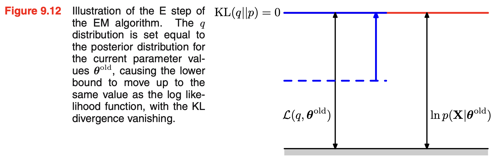
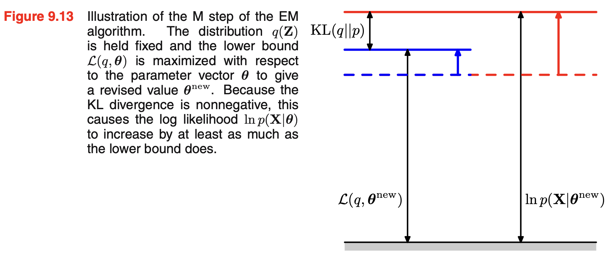

Chapter 9: Mixture Models and EM
9.1. K-means clustering
an assignment of data points to clusters as well as a set of vector \(\{\mu_k\}\).
The sume of the squares of the distance of each data points to its closest vector \(\mu_k\) is a minimum.
1-of-K coding scheme
distortion measure
from 9.3.3 (9.43) will see that minimizing this distortion measure \(J\) is equivalent to maximizing the log likelihood of complete-data.
| K-means | EM | step |
|---|---|---|
| update \(r_{n,k}\) | E expectation step | take 1 if k is min |
| update \(\mu_k\) | M maximization step | mean of points assigned to k |
It may converge to a local rather tha global minimum of J
K-medoids
Instead of allowing \(\mu_k\) to be any point in space, K-medoids restricts \(\mu_k \in \{x_1,\dots,x_N\}\)
More specifically, each prototype must be one of the data points assigned to the cluster.
That representative data point is called the medoid.
So unlike:
- K-means → prototype = average point
- K-medoids → prototype = actual data point
now optimization becomes a finite search problem with \(O(N_k^2)\) complexity
9.2. Mixture of Gaussians
\(\gamma(zk)\) is the corresponding posterior probability once we have observed \(x\). As we shall see later, \(\gamma(zk)\) can also be viewed as the responsibility that component \(k\) takes for ‘explaining’ the observation \(x\).
In the expectation step, or E step, we use the current values for the parameters to evaluate the posterior probabilities, or responsibilities \(\gamma\)
We then use these probabilities in the maximization step, or M step, to re-estimate the means, covariances, and mixing coefficients using the results (9.17), (9.19), and (9.22)
9.17:
9.19:
9.22:
There will generally be multiple local maxima of the log likelihood function, and that EM is not guaranteed to find the largest of these maxima.
9.3. An alternative view of EM
E step: \(\mathcal{Q}(\theta, \theta^{\mathrm{old}}) = \sum_z p(Z \mid X,\theta^{\mathrm{old}}) \ln p(X,Z \mid \theta)\)
M step: \(\theta^{\mathrm{new}} = \mathrm{argmax}_{\theta} \mathcal{Q}(\theta, \theta^{\mathrm{old}})\)
9.3.1 Gaussian mixtures revisited
Complete data
Incomplete data
Note \(z_n\) is a K-dimensional one-hot vector. The complete-data log liklihood function is a sum of K independent contributions, one for each mixture component
9.3.2. Relation to K-means
K-means perform hard assignment of data points to clusters, while EM makes soft assignment based on posterior probability.
9.4. EM in general
Here \(\mathcal{L}\) is ELBO (Evidence Lower Bound). It is also called elbow
Note
\(D_{KL}\) is minused
\(KL(q\| p)\) is the Jullback-Leibler divergence between \(q(Z)\) and posterior \(p(Z\mid X,\theta)\)


EM in MAP
Reference
PRML